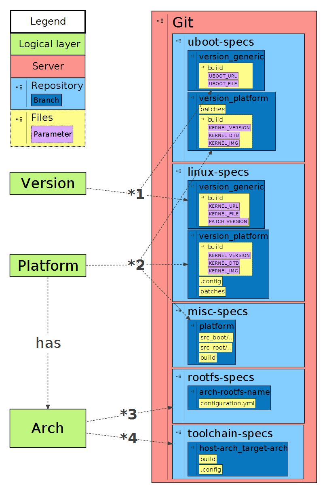

Repository structure
The following image shows the structure how it should have already been set up by your system administrator. The image should help you to understand the importance of the different repositories and branches for the embEDUx project.

As you can see, there are 5 repositories. Each repository holds the data for the five outputs that embEDUx can build. Those are:
- linux: kernel image and dtb
- uboot: uboot image and dtb
- toolchain: toolchain
- rootfs: rootfs
- misc: files
1
Each version of the Linux kernel needs to have exactly one kernel branch in the linux repository. Also for each version of U-Boot, exactly one uboot branch is needed in the uboot repository.
2
For each platform there needs to be one platform branch in the linux, uboot and misc repository.
3
For each architecture, which can be obtained from the desired platforms, there needs to be a rootfs. Furthermore as there are multiple courses that use the same arch, there has to be one branch for each course/arch combination.
4
For each arch, there needs to be a toolchain branch in the toolchains repository. These toolchains are statically linked, so that everyone can use them within their desired development platform. Theoretically also a canadian toolchain can be possible.